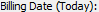

from sikuli import * import logging import baCommon import datetime import baAdjustTotal_Time import baAdjustTotal_Exp import baAdjustTotal_Both import baAdjustTimekeeper_Time import baAdjustTimekeeper_Exp import baAdjustTimekeeper_Both import baAdjustTask import baAdjustExpense import baAbsolute_Time import baAbsolute_Exp import baAbsolute_Both import baMinimum_Time import baMinimum_Exp import baMinimum_Both import baMaximum_Time import baMaximum_Exp import baMaximum_Both import baFlatFeePlus_Time import baFlatFeePlus_Exp import baFlatFeePlus_Both import baContingency_Time import baContingency_Exp import baContingency_Both import baMinimumHours import baPercent import baProgressTotal import baProgressActivity import baInterimTotal import baInterimActivity import baSlipsRoundMin import baSlipsRoundDol import baPrecision # - - - - - - - - - - - - - - - - - - - - - - - - - # def baLogHeader(): # - - - - - - - - - - - - - - - - - - - - - - - - - # if os.path.isfile(Settings.BALogFile): outFile = Settings.repFolder + "\\BA-Log.txt" billLog = open(outFile, "a") billLog.write("\n") billLog.write("==================================================\n") baTime = datetime.datetime.now() billLog.write(baTime.strftime("Started: %Y-%m-%d %H:%M:%S\n")) billLog.write("==================================================\n") # - - - - - - - - - - - - - - - - - - - - - - - - - # def Review_BillingArrangements(): # - - - - - - - - - - - - - - - - - - - - - - - - - # logging.debug(' ') logging.debug('Review_BillingArrangements') # make sure timeslips has focus if int(Settings.tsVersion) > 2013: click() baLogHeader() baAdjustTotal_Time.BA_AdjustTotal_Time() baAdjustTotal_Exp.BA_AdjustTotal_Exp() baAdjustTotal_Both.BA_AdjustTotal_Both() baAdjustTimekeeper_Time.BA_AdjustTimekeeper_Time() baAdjustTimekeeper_Exp.BA_AdjustTimekeeper_Exp() baAdjustTimekeeper_Both.BA_AdjustTimekeeper_Both() baAdjustTask.BA_AdjustTask() baAdjustExpense.BA_AdjustExpense() baAbsolute_Time.BA_Absolute_Time() baAbsolute_Exp.BA_Absolute_Exp() baAbsolute_Both.BA_Absolute_Both() baMinimum_Time.BA_Minimum_Time() baMinimum_Exp.BA_Minimum_Exp() baMinimum_Both.BA_Minimum_Both() baMaximum_Time.BA_Maximum_Time() baMaximum_Exp.BA_Maximum_Exp() baMaximum_Both.BA_Maximum_Both() baFlatFeePlus_Time.BA_FlatFeePlus_Time() baFlatFeePlus_Exp.BA_FlatFeePlus_Exp() baFlatFeePlus_Both.BA_FlatFeePlus_Both() baContingency_Time.BA_Contingency_Time() baContingency_Exp.BA_Contingency_Exp() baContingency_Both.BA_Contingency_Both() baMinimumHours.BA_MinimumHours() baPercent.BA_Percent() baProgressTotal.BA_ProgressTotal() baProgressActivity.BA_ProgressActivity() baInterimTotal.BA_InterimTotal() baInterimActivity.BA_InterimActivity() baSlipsRoundMin.BA_SlipsRoundMin() baSlipsRoundDol.BA_SlipsRoundDol() baPrecision.BA_Precision()